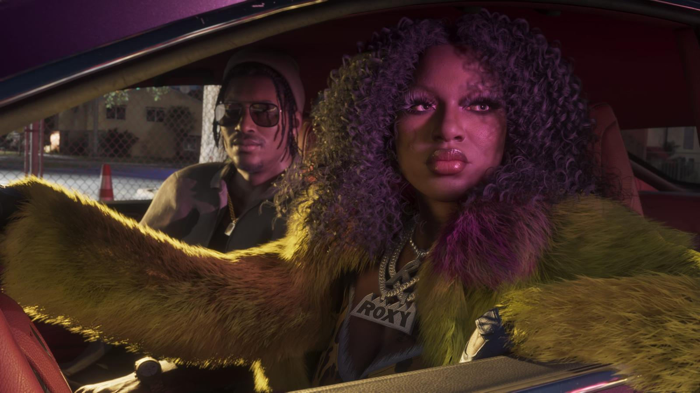

Слух: GTA 6 выйдет на Nintendo Switch 2 одновременно с PS5
Обновлено:

- Слух: GTA 6 выйдет на Switch 2 в один день с PS5 и Xbox.
- Источник — ведущий подкаста Kiwi Talkz со ссылкой на анонимный источник.
- Обещанный анонс «до начала мая 2026» не состоялся.
- Rockstar называет только PS5 и Xbox Series X|S.
Опровергнуто: весенний «анонс до начала мая» так и не случился. Официальные платформы — только PS5 и Xbox Series X|S. Порт на Switch 2 позже — не анонсирован и не исключён.
Что говорят
В марте 2026 года слух выглядел почти официально. Ведущий подкаста Kiwi Talkz Рис Райли (Reece Reilly) заявил, что у него есть источник, по словам которого GTA 6 выйдет на Nintendo Switch 2 в день релиза, а объявят это до начала мая. Другой инсайдер, Nash Weedle, поддержал идею, но осторожнее: версия для Switch 2 будет, но не на старте.
Масла в огонь подлил глава Take-Two Штраус Зельник. В интервью The Game Business он, рассуждая о конкурентах, заметил: «У Nintendo тоже всё в порядке. Благотворительный ужин в пользу Nintendo устраивать не придётся». Фанаты прочитали это как намёк. Хотя, если вчитаться, Зельник говорил о рынке, а не о GTA.
Что известно на самом деле
Май прошёл — анонса не было. Сентябрь почти закончился — тоже. Rockstar везде указывает только две платформы: PlayStation 5 и Xbox Series X|S. Предзаказы, геймпады, коллекционный набор — всё под эти консоли. Версии для ПК пока тоже нет, подробнее — GTA 6 на ПК: когда выйдет.
| Что обещал слух | Что вышло |
|---|---|
| GTA 6 на Switch 2 в день релиза | 🔴 Нет: платформы — PS5 и Xbox Series X|S |
| Официальный анонс до начала мая 2026 | 🔴 Не было |
| Порт на Switch 2 когда-нибудь позже | 🟡 Не анонсирован, но и не исключён |
Самое интересное — в этой истории неожиданно сработал тот же подкаст. 25 сентября в Kiwi Talkz пришёл бывший дизайнер Rockstar Жереми Артвик и объяснил, почему порт на Switch 2 кажется ему бессмысленным (его слова — в сводке за 27 сентября). Подкаст, который весной запустил слух, осенью сам же дал слово человеку, который его разбирает.
У Rockstar с Nintendo сложная история. GTA V за 13 лет так и не вышла на Switch — ни на первой, ни на второй. Зато в 2021 году на Switch вышла GTA: The Trilogy — Definitive Edition (III, Vice City и San Andreas), а 17 августа 2023-го — порт первой Red Dead Redemption. То есть Rockstar выпускает на Nintendo старые игры, но ни одной своей новинки в день релиза туда не отдавала.
Аргумент «Switch 2 не потянет» тоже не железный. В день старта консоли, 5 июня 2025 года, на ней вышла Cyberpunk 2077: Ultimate Edition — тяжёлый открытый мир, который многие считали невозможным на портативке. Так что вопрос не только в «железе», а в том, захочет ли Rockstar тратить на это время. Судя по всему, до релиза на PS5 и Xbox — точно нет.
Наш вывод
🔴 Опровергнуто в той форме, в какой слух звучал: одновременного выхода на Switch 2 нет, анонса до мая не было. Порт когда-нибудь потом — 🟡, как и с ПК. Если Rockstar что-то объявит, обновим статус в тот же день.
Похожая история уже была со слухом о старых консолях — Слух: GTA 6 выйдет на PS4 и Xbox One.
Источники: Gameranx (слух Kiwi Talkz, 25.03.2026); WePC (цитата Зельника, The Game Business); GamesRadar+ (интервью Артвика, 25.09.2026); Rockstar Games (платформы); Nintendo (дата выхода Switch 2).